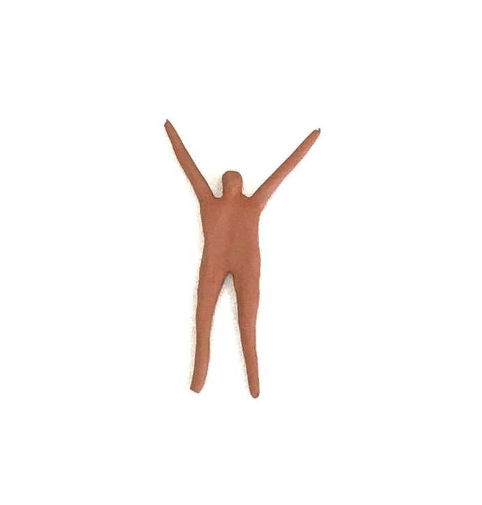

ILARIA IGLIANI
Sdraiati
 A routine, a ritual was born during the pandemic and caused underlying moods triggered by a period in isolation to come out.
A routine, a ritual was born during the pandemic and caused underlying moods triggered by a period in isolation to come out.
The lying position of the figures represents a problem of her generation, felt perhaps especially in her home country Italy.
For instance redundant worries, precariousness and the feeling of being frozen and stuck in a loop are emphasized in this period.
Unconsciously, on a daily basis for a year, like in a diary she expressed her discomfort and feeling of being stuck through the repetition of her ceramic figures.
The material used (ceramic) and the size of the figures, emphasize the fragility.
 A metaphor of the human being, small and fragile.
The ceramic figures also remind us of the people of Pompeii, imprisoned in their bodies in the instant of the catastrophe.
A metaphor of the human being, small and fragile.
The ceramic figures also remind us of the people of Pompeii, imprisoned in their bodies in the instant of the catastrophe.
Locked in a timeless dimension.

Video Exposition Academy of Fine Arts, Munich, 2022
The Artist

Ilaria Igliani, born in 1991, is an Italian artist currently based in Munich.
In her works, she focuses on the process of catharsis of the unconscious and investigates the relationship between
instinct vs. reasoning through making use of different artistic media such as photos, videos, ceramic and installations.

Contact
E-mail:
Follow me